Chapter 7 Plots
Some significant applications are demonstrated in this chapter.
7.1 ggplot2 特殊用法
library(ggplot2)
# 1.旋转分面标题的文字
# Rotate Strip Text in ggplot2 https://stackoverflow.com/questions/48892826/rotate-strip-text-in-ggplot2
ggplot(mtcars, aes(mpg, disp, color=factor(carb) ))+
geom_point()+
facet_grid(gear~.)+
theme_classic()+
theme(
strip.background = element_blank(),
panel.border = element_rect(fill="#00112200"),
strip.text.y = element_text(angle=60, color='red'),
legend.position = 'none' #不显示图例
)
7.2 ggplot2 主题及自定义主题
我们平常修改主题就是在 theme() 中写很多规则，这样很灵活，但是不方便复用。
对于常用的规则，最好是包装成返回一堆 theme 规则的函数，类似 theme_bw()，方便复用、方便记忆。
下面2个主题函数分别来自 Seurat(4.0.4)包和 ggplot2 自带，我们可以模仿，来自定义主题。
> Seurat::NoLegend
function (...)
{
no.legend.theme <- theme(legend.position = "none", validate = TRUE,
...)
return(no.legend.theme)
}
> Seurat::NoAxes
function (..., keep.text = FALSE, keep.ticks = FALSE)
{
blank <- element_blank()
no.axes.theme <- theme(axis.line.x = blank, axis.line.y = blank,
validate = TRUE, ...)
if (!keep.text) {
no.axes.theme <- no.axes.theme + theme(axis.text.x = blank,
axis.text.y = blank, axis.title.x = blank, axis.title.y = blank,
validate = TRUE, ...)
}
if (!keep.ticks) {
no.axes.theme <- no.axes.theme + theme(axis.ticks.x = blank,
axis.ticks.y = blank, validate = TRUE, ...)
}
return(no.axes.theme)
}
> theme_bw
function (base_size = 11, base_family = "", base_line_size = base_size/22,
base_rect_size = base_size/22)
{
theme_grey(base_size = base_size, base_family = base_family,
base_line_size = base_line_size, base_rect_size = base_rect_size) %+replace%
theme(panel.background = element_rect(fill = "white",
colour = NA), panel.border = element_rect(fill = NA,
colour = "grey20"), panel.grid = element_line(colour = "grey92"),
panel.grid.minor = element_line(size = rel(0.5)),
strip.background = element_rect(fill = "grey85",
colour = "grey20"), legend.key = element_rect(fill = "white",
colour = NA), complete = TRUE)
}# 这些数据是 dput() 输出的
dat1=structure(list(year = 2020:2000, all = c(4561L, 4393L, 4359L,
3756L, 3744L, 3674L, 3346L, 2955L, 2597L, 2652L, 2747L, 2878L,
2928L, 2640L, 2570L, 2762L, 2787L, 2623L, 2830L, 3093L, 2932L
), en = c(4312L, 4115L, 3983L, 3482L, 3450L, 3416L, 3156L, 2734L,
2367L, 2425L, 2509L, 2675L, 2734L, 2433L, 2396L, 2589L, 2606L,
2425L, 2624L, 2884L, 2758L), wa = c(224L, 240L, 327L, 260L, 271L,
238L, 168L, 208L, 214L, 215L, 224L, 184L, 161L, 189L, 157L, 156L,
161L, 181L, 183L, 187L, 152L)), row.names = c(NA, 21L), class = "data.frame")
head(dat1)## year all en wa
## 1 2020 4561 4312 224
## 2 2019 4393 4115 240
## 3 2018 4359 3983 327
## 4 2017 3756 3482 260
## 5 2016 3744 3450 271
## 6 2015 3674 3416 238# 自定义主题
theme_guardian = function(...){
require(grid)
theme_grey(...)+ #基于预设主题
theme(
#plot.background = element_blank(),
plot.caption = element_text(color = "grey30", face = "italic",
margin=margin(t=4, unit="pt"),
hjust = 0, size=10), #底部数据源
plot.title = element_text(hjust = 0, size=12), #大标题
panel.grid.major.y = element_line(color="grey70", size=0.5),
panel.background = element_blank(), #不要灰背景
panel.grid.major.x = element_blank(), #不要竖线
axis.line.x = element_blank(),
axis.ticks = element_line(color="grey70"),
axis.text = element_text(color="grey70"),
axis.title = element_text(color="grey70", size=14),
axis.title.x = element_text(margin=margin(t=5, unit="pt")),
axis.title.y = element_text(margin=margin(r=5, unit="pt")),
legend.position = "top",
legend.justification = "left",
legend.key.size = unit(10, unit="pt"),
legend.background = element_blank(),
)
}
library(ggplot2)
# fig1:
#library(ggthemes)
g1=ggplot(dat1, aes(year, all))+geom_line(color="darkred")+
labs(x="Year of death registration",
y="The number of deaths",
caption = "Guardian graphic. Source:ONS",
title="There were 4,561 drug posoning deaths in
England and Wales in 2020- the eighth
consecutive annual rise")+
theme_guardian()+ #使用自定义主题
annotate("text", x=2020, y=4671, label="4,561", color="darkred")+
geom_point(data=data.frame(x=2020, y=4561), aes(x,y),
size=2,
color="darkred"); #g1
#pdf("g1.pdf", width=4.5, height=4, useDingbats = F)
print(g1)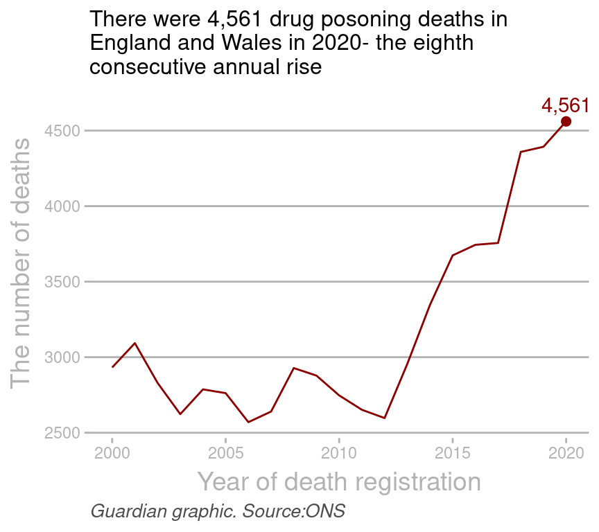
#dev.off()
# fig2:
colors=c("#BB2924", "#306B9F")
#dat2=read.table("dat2.txt", header = T)
dat2=structure(list(year = 2020:2000, M = c(21.7, 19.5, 18.1, 11.8,
11, 9.4, 7.3, 4.8, 4.1, 3.1, 4.4, 6.2, 6.8, 5.7, 5.8, 5.3, 4.6,
4, 4, 2.8, 2.4), F = c(5.5, 5.1, 4.1, 3.3, 1.9, 1.8, 1.4, 1.2,
0.7, 0.8, 0.6, 0.8, 1.3, 1.1, 0.9, 0.9, 0.8, 0.6, 0.6, 0.7, 0.5
)), class = "data.frame", row.names = c(NA, -21L))
library(tidyr)
dat3=pivot_longer(dat2, cols=c("M", "F"))
dat3$name=factor(dat3$name, levels=c("M", "F"))
head(dat3)## # A tibble: 6 × 3
## year name value
## <int> <fct> <dbl>
## 1 2020 M 21.7
## 2 2020 F 5.5
## 3 2019 M 19.5
## 4 2019 F 5.1
## 5 2018 M 18.1
## 6 2018 F 4.1p1=ggplot()+
geom_line(data=dat3, mapping=aes(year, value, color=name ))+
labs(x="Year of death registration",
y="The Rate of Deaths involving Cocaine(%)",
caption = "Guardian graphic. Source:ONS, age-standardised mortality rates",
title="The rate of male deaths involving cocaine has
increased shaply since 2010")+
theme_guardian()+ #使用自定义主题
scale_color_manual(name="", values = colors)+
guides(color = guide_legend(override.aes = list(size = 5)))+
annotate("text",
x=2020,
y= c(max(dat2$M), max(dat2$F))+2,
label=c(max(dat2$M), max(dat2$F)), color=colors)+
geom_point(data=data.frame(x=2020,
y=c(max(dat2$M), max(dat2$F)) ),
aes(x,y),
size=2,
color=colors); #p1
#pdf("g2.pdf", width=5, height=4.5, useDingbats = F)
print(p1)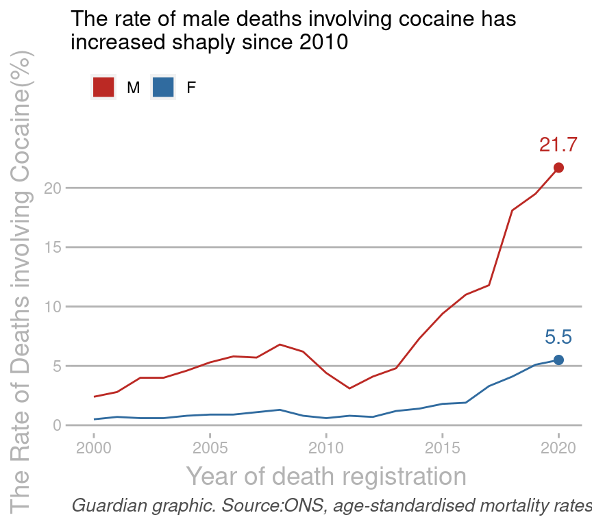
#dev.off()使用 grid 包还能继续修改该图形。比如把上图的图例修改为圆角矩形(links)。
7.3 图片瘦身(ggrastr)
ggrastr: Rasterize Layers for ‘ggplot2’
作用: 生成栅格图、矢量文字。 生成pdf的时候，图片瘦身效果明显，1.4M 栅格化后只有200k。
library(ggrastr)
library(ggplot2)
#pdf("my_output/test1.pdf", width=4, height=3)
ggplot(diamonds, aes(carat, price, color=cut))+
#geom_point(size=0.1)+
geom_point_rast(size=0.1, raster.dpi = getOption("ggrastr.default.dpi", 300),)+ #图片瘦身：点图不是是矢量，文字是
theme_classic()+
guides(color = guide_legend(override.aes = list(size = 3)))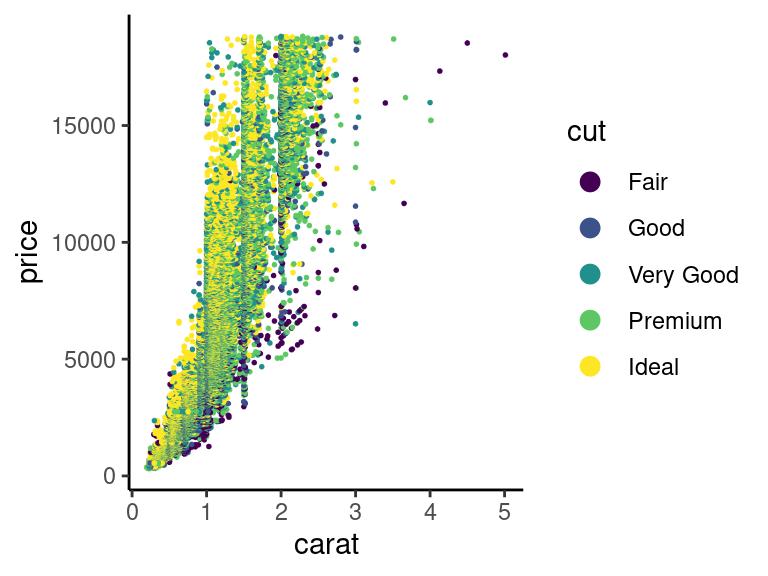
#dev.off()Ubuntu 安装报错
Please install cairo (http://www.cairographics.org/) and/or set CAIRO_CFLAGS/LIBS correspondingly
...
ERROR: dependencies ‘Cairo’, ‘ragg’ are not available for package ‘ggrastr’
Shell
https://cairographics.org/download/
# apt-get install libcairo2-dev
# R
> BiocManager::install("ggrastr")
Configuration failed to find the harfbuzz freetype2 fribidi library. Try installing:
* deb: libharfbuzz-dev libfribidi-dev (Debian, Ubuntu, etc)
Shell
# apt-get install libharfbuzz-dev libfribidi-dev
# R
> BiocManager::install("ggrastr")
Configuration failed to find one of freetype2 libpng libtiff-4. Try installing:
* deb: libfreetype6-dev libpng-dev libtiff5-dev libjpeg-dev (Debian, Ubuntu, etc)
Shell
# apt-get install libfreetype6-dev libpng-dev libtiff5-dev libjpeg-dev
# R
> BiocManager::install("ggrastr")
...
* DONE (ggrastr)7.4 为paper配色而生(ggsci包)
包含各种sci-fi主题的调色盘！
scale_color_palname() scale_fill_palname() 就包含了 nature, Lancet, NEJM，JAMA,JCO等顶级杂志的配色风格
library(ggplot2)
library(dplyr)
library(ggsci)
library(gridExtra)
p1 = ggplot(subset(diamonds, carat >= 2.2), aes(x = table, y = price, colour = cut) )+
geom_point(alpha = 0.7) +
geom_smooth(method = "loess", alpha = 0.05, size = 1, span = 1) +
theme_bw()
p2 = ggplot(subset(diamonds, carat > 2.2 & depth > 55 & depth < 70), aes(x = depth, fill = cut)) +
geom_histogram(colour = "#00112200", binwidth = 1, position = "dodge") +
theme_bw()
# NPG配色
p1_npg = p1 + scale_color_npg()
p2_npg = p2 + scale_fill_npg()
grid.arrange(p1_npg, p2_npg, ncol = 2)##grid组图
# 新英格兰医学杂志配色
grid.arrange(p1 + scale_color_nejm(),
p2 + scale_fill_nejm(),
ncol = 2)
# 柳叶刀杂志配色 scale_color_lancet(), scale_fill_lancet(),
# JAMA配色 scale_color_jama(), scale_fill_jama(),
set.seed(202201)
p1=diamonds %>% sample_n(1000) %>%
ggplot()+
aes(x=cut,y=price,fill=cut) +
geom_boxplot()+
theme_classic()
p1+scale_fill_lancet()
# 动画主题
p1+scale_fill_rickandmorty()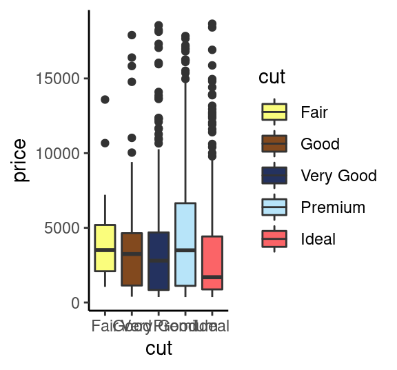
7.4.1 获取颜色16进制值
nejm<-pal_nejm("default",alpha = 1)(8)##(9表示呈现多少个颜色)
nejm## [1] "#BC3C29FF" "#0072B5FF" "#E18727FF" "#20854EFF" "#7876B1FF" "#6F99ADFF"
## [7] "#FFDC91FF" "#EE4C97FF"library(scales)
scales::show_col(nejm, cex_label = 0.8 )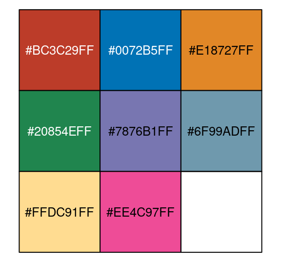
#scales::show_col( ggsci::rgb_material("red"), cex_label = 0.6 )
#scales::show_col( ggsci::rgb_material("blue"), cex_label = 0.6 )
scales::show_col( ggsci::rgb_material("purple"), cex_label = 0.6 )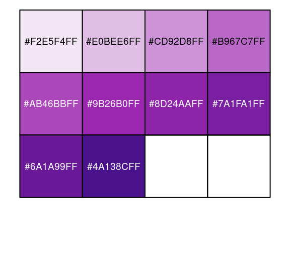
7.5 图片布局(grid, gridExtra)
在grid包中，grob是一个可编辑的绘图对象，grob是graphical object两个单词的前两个字符的组合。常用于表示ggplot对象、lattice等高级图形系统创建图形对象。
grid.arrange()函数，不仅能够控制个数已知的图形布局，还能对控制未知个数的图形布局，功能十分强大。
arrangeGrob()和grid.arrange()函数 这两个布局函数的区别是：arrangeGrob()返回未绘制的grob，而grid.arrange()函数在当前的设备上绘图图形。
library(grid)
library(gridExtra)
library(ggplot2)
# 创建对象
g1=ggplot(mtcars, aes(disp, mpg))+geom_point()+theme_classic();g1
g2=ggplot(iris, aes(Species, Sepal.Length, fill=Species))+
geom_violin()+theme_classic()+labs(x="")+
theme( axis.text.x = element_text(angle=60, hjust = 1),
legend.position = "none");g2
# (1) 两列
grid.arrange(g1, circleGrob(),
rectGrob(width=0.8, height=0.5), g2,
ncol = 2) 
# (2) 控制每行每列的宽高比例
grid.arrange(g1, g2, circleGrob(), rectGrob(width=0.9), ncol=2, nrow=2, widths=c(3,5), heights=c(4,1))
# (3) 绘图对象合并为一个list参数传入
gs=list()
gs[[1]]=g1
gs[[2]]=g2
# gs
grid.arrange(grobs=gs,ncol = 2)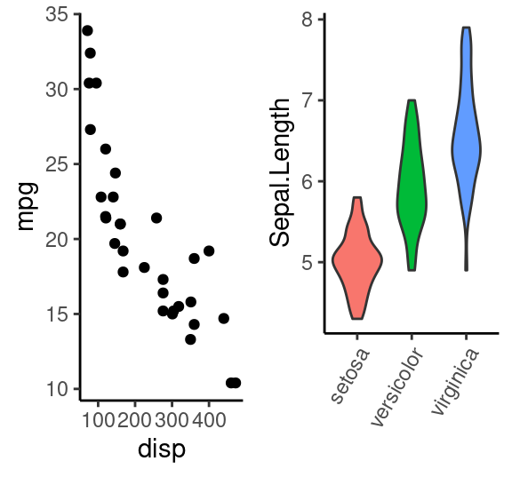
# (4) 使用 rbind.gtable 合并后再画图
gA <- ggplotGrob(g1)
gB <- ggplotGrob(g2)
grid::grid.newpage()
grid::grid.draw(rbind(gA, gB))
7.5.1 更精细控制布局:使用 layout_matrix=矩阵
# 共三列，1/3, 2/3
grid.arrange(g1, g2,
layout_matrix = matrix(c(1, 2, 2), ncol = 3))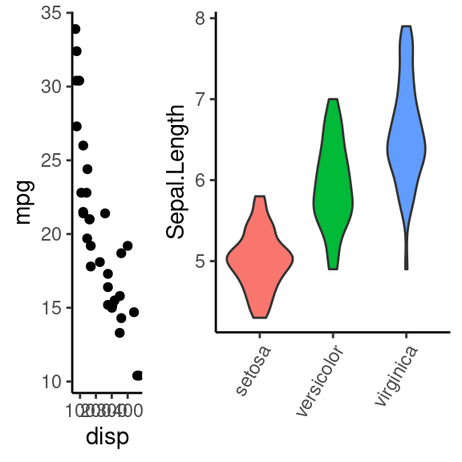
# 还可以留空白
grid.arrange(g1, g2,
layout_matrix = matrix(c(1, NA, NA, NA, 2, 2),
byrow = TRUE, ncol = 3))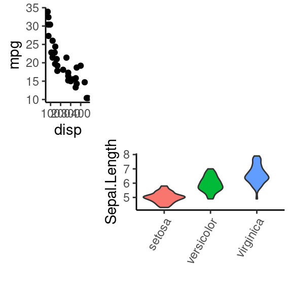
# 更复杂的布局
lay <- rbind(c(1,1,1,2,3),
c(1,1,1,4,5),
c(6,7,8,9,9))
grid.arrange(grobs = gs, layout_matrix = lay)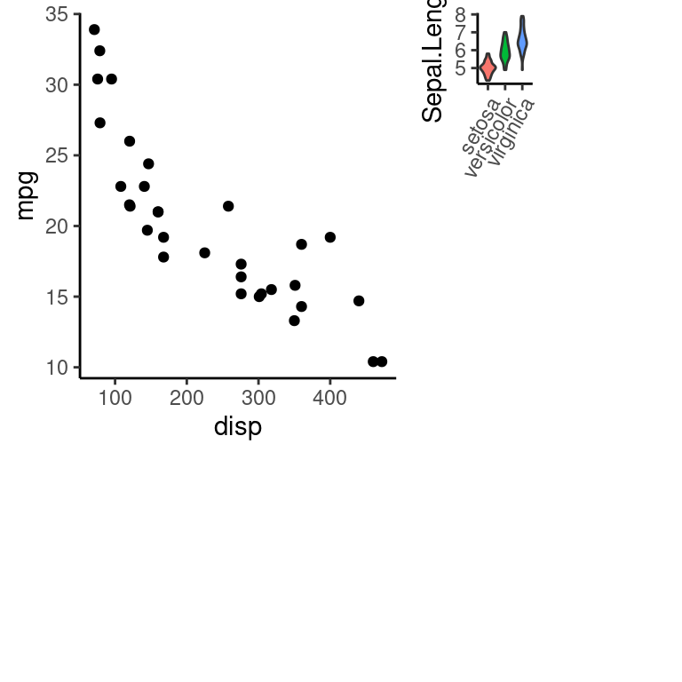
7.5.2 图中图
# 把 ggplot2 对象转变为 grob 对象
g2_2=ggplot2::ggplotGrob(g2)
grid.draw(g2_2)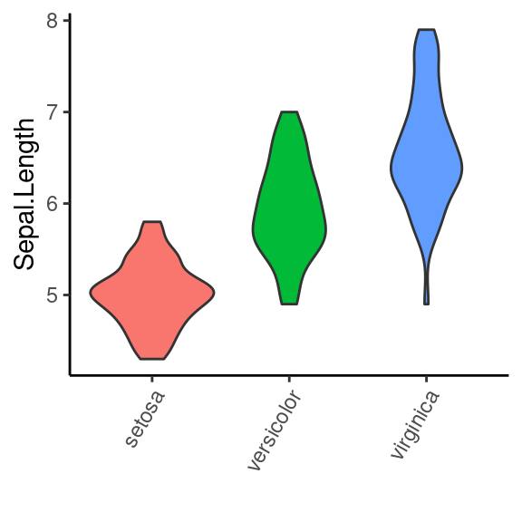
# 通过添加注释(annotate)的方式，向一个图形内部添加一个小图形
#参数解释
# xmin、xmax、ymin、ymax # 添加图形在大图中的四个点的坐标
# grob # 要添加的小图对象
grid.newpage()
g1 +
annotation_custom(grob = g2_2,
xmin = 250, xmax = 450, ymin = 20, ymax = 35)
7.6 拼接图形(gridExtra/ cowplot/ patchwork)
创建带边缘分布的散点图，边缘分布图和中间的主图坐标怎么对齐呢？ - 可以尝试 cowplot 包的 plot_grid 函数的 align 函数实现坐标对齐。 - 或者 patchwork 包的 plot_layout 函数。
library(RColorBrewer)
# 模拟数据
set.seed(202201)
df1 <- data.frame(x=c(rnorm(1000, mean=1),rnorm(3000, mean=4.5)),
y=c(rnorm(3000, mean=-1.6),rnorm(1000, mean=2.2)) )
# 二维分布云图
p1<-ggplot(df1, aes(x, y)) +
#geom_hex(bins = 40,na.rm=TRUE)+ #填充单元形状设定为六边形
geom_bin2d (bins=40,na.rm=TRUE) + #填充单元形状设定为正方形
scale_fill_gradientn(colours=rev(brewer.pal(11,'Spectral')))+
theme_classic()
p1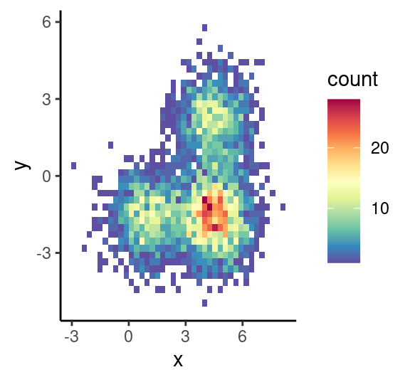
# 二维分布密度图
p2<-ggplot(df1, aes(x, y)) +
stat_density_2d (geom ="raster",aes(fill = ..density..),contour = F)+ #栅格形填充
# stat_density_2d (geom ="polygon",aes(fill = ..level..),bins=30 )+ #多边形填充
scale_fill_gradientn(colours= rev(brewer.pal(11,'Spectral')))+
theme_classic()
p2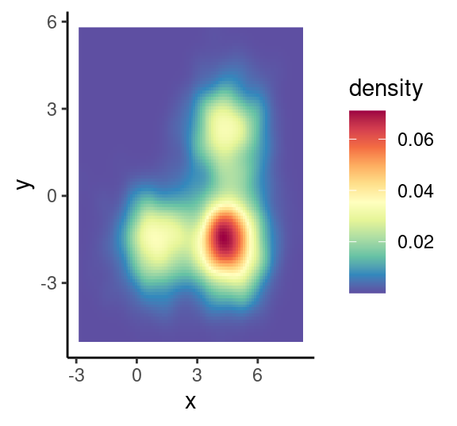
# 效果1: 二维分布云图+边缘直方图
#建立空白图形面板
empty<-ggplot()+
theme(panel.background = element_rect(fill="white", color="white"))
# 绘制顶部直方图
hist_top <- ggplot(df1, aes(x)) +
geom_histogram(colour="black",fill='#5E4FA2',size=0.25)+
theme_void()
# 绘制右边的直方图
hist_right <- ggplot(df1, aes(y)) +
geom_histogram(colour="black",fill='#5E4FA2',size=0.25)+
theme_void()+
coord_flip() #旋转坐标轴
#绘制云图
scatter<-ggplot(df1, aes(x, y)) +
#stat_density2d(geom ="polygon",aes(fill = ..level..),bins=30 )+
stat_binhex(bins = 15,na.rm=TRUE,color="black")+#
scale_fill_gradientn(colours=rev(brewer.pal(11,'Spectral')))+
theme_minimal()+theme(
legend.position = "none"
)
# 最终的组合
grid.newpage()
grid.arrange(hist_top, empty,
p1+theme( legend.position = "none"), hist_right,
ncol=2, nrow=2, widths=c(4,1), heights=c(1,4))
# grid.arrange(hist_top, empty, scatter, hist_right, ncol=2, nrow=2, widths=c(4,1), heights=c(1,4))
# 或者先返回对象，再画出来
p5=arrangeGrob(hist_top, empty, scatter, hist_right, ncol=2, nrow=2, widths=c(4,1), heights=c(1,4))
p5## TableGrob (2 x 2) "arrange": 4 grobs
## z cells name grob
## 1 1 (1-1,1-1) arrange gtable[layout]
## 2 2 (1-1,2-2) arrange gtable[layout]
## 3 3 (2-2,1-1) arrange gtable[layout]
## 4 4 (2-2,2-2) arrange gtable[layout]grid.draw(p5)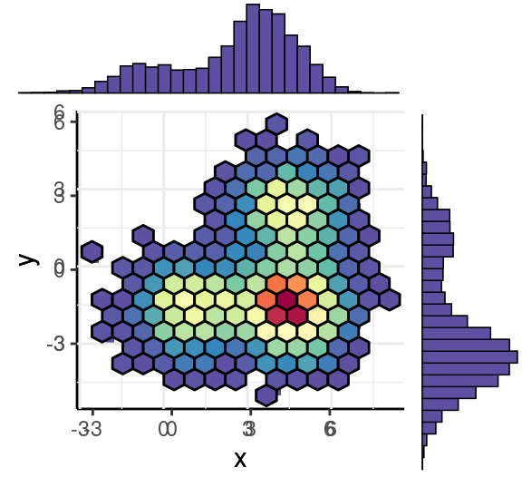
# 效果2: 二维密度云图+边缘密度图
# 绘制顶部直方图
hist_top <- ggplot(df1, aes(x)) +
geom_density(colour="black",fill='#5E4FA2',size=0.25)+
theme_void()
# 绘制右边的直方图
hist_right <- ggplot(df1, aes(y)) +
geom_density(colour="black",fill='#5E4FA2',size=0.25)+
theme_void()+
coord_flip()
#绘制云图
scatter<-ggplot(df1, aes(x, y)) +
#stat_density2d(geom ="polygon",aes(fill = ..level..),bins=30 )+
stat_density2d(geom ="raster",aes(fill = ..density..),bins = 15,na.rm=TRUE,contour = F,alpha=1)+#
scale_fill_gradientn(colours=rev(brewer.pal(11,'Spectral')))+
theme_minimal()+
theme(panel.background=element_rect(fill="white",colour="black",size=0.25),
legend.position = "none" )
# 最终的组合
grid.arrange(hist_top, empty, scatter, hist_right, ncol=2, nrow=2, widths=c(4,1), heights=c(1,4))
7.6.1 cowplot 拼接图
拼接方法: https://zhuanlan.zhihu.com/p/384189537
library(cowplot)
plot_grid(hist_top, empty,
p1+theme( legend.position = "none"), hist_right,
ncol = 2,
#labels = "XX", hjust = -0.5, vjust = 1,
align = "hv", # h 和 v 方向都对齐
#scale = 1,
rel_widths = c(4, 1), rel_heights = c(1, 4))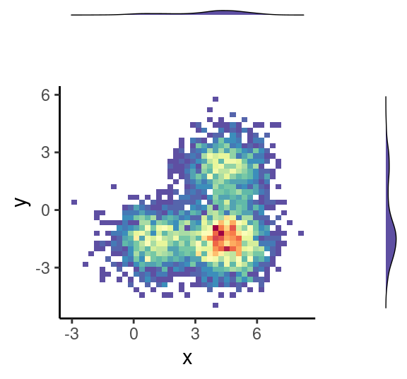
# 坐标轴的对齐 https://wilkelab.org/cowplot/articles/aligning_plots.html7.6.2 patchwork 拼接图
library(patchwork)
hist_top + plot_spacer() + # patchwork的函数，自动添加一个空白块
(p1+theme( legend.position = "none")) + hist_right +
plot_layout(
ncol = 2,
nrow = 2,
widths = c(4, 1),
heights = c(1, 4)
)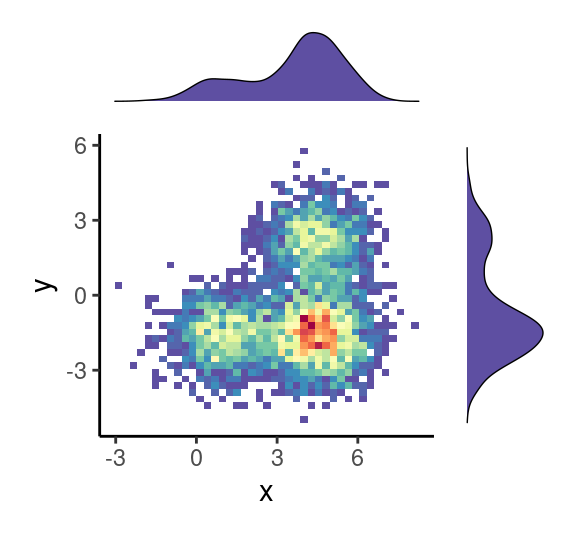
7.7 ggExtra 画边缘分布
# https://www.r-graph-gallery.com/277-marginal-histogram-for-ggplot2
# https://github.com/daattali/ggExtra
p0<-ggplot(df1, aes(x, y)) +
geom_point(color="slateblue", alpha=0.2, size=0.2)+
scale_fill_gradientn(colours=rev(brewer.pal(11,'Spectral')))+
theme_classic()
# p0
library(ggExtra)
ggMarginal( (p0+theme( legend.position = "none")), type="boxplot", fill = "slateblue")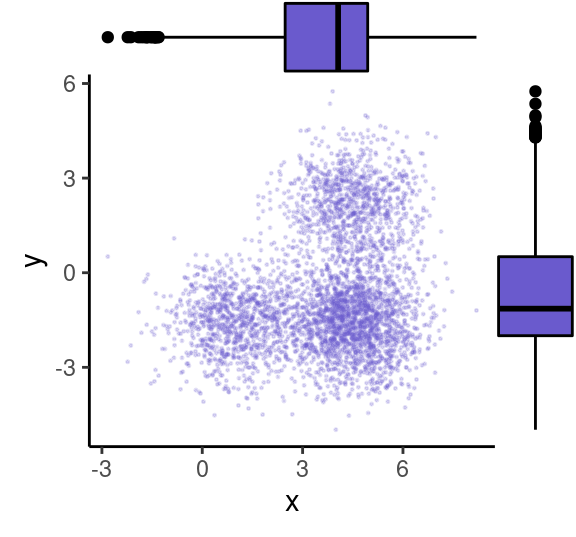
grid.newpage()
ggMarginal( (p0+theme( legend.position = "none")), type="density", fill = "slateblue")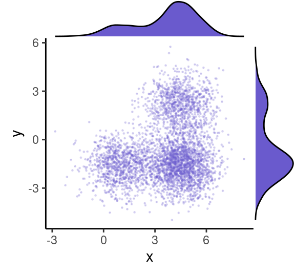
grid.newpage()
ggMarginal( (p0+theme( legend.position = "none")), type="histogram", fill = "slateblue")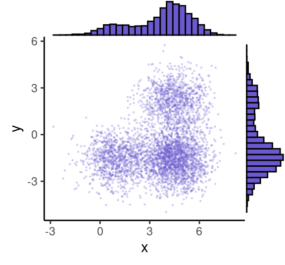
grid.newpage()
ggMarginal( (p0+theme( legend.position = "none")), type="histogram", fill = "slateblue", xparams = list( bins=10))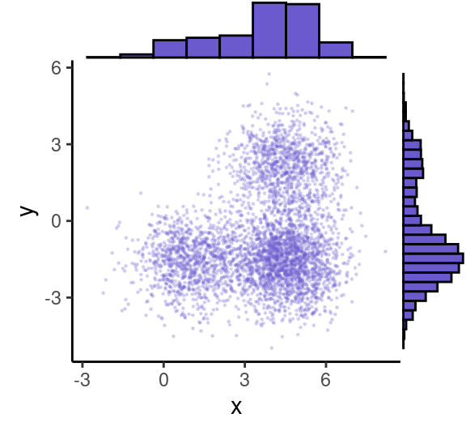
7.8 相关分析(去掉共线性的变量)
# Finding highly correlated variables
library(corrplot)
M=cor(na.omit(mtcars))
corrplot(M, method = "circle", type = "lower",
tl.srt = 45, tl.col = "black", tl.cex = 0.75)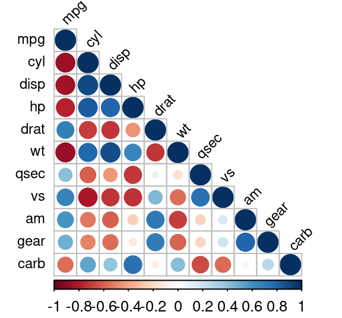
7.9 pheatmap 热图(成熟)
https://r-charts.com/correlation/pheatmap/ https://www.rdocumentation.org/packages/pheatmap/versions/1.0.12/topics/pheatmap
library("pheatmap")
# cutree_rows 分成4份
pheatmap( mtcars, scale="column", border_color = NA, cutree_rows = 4)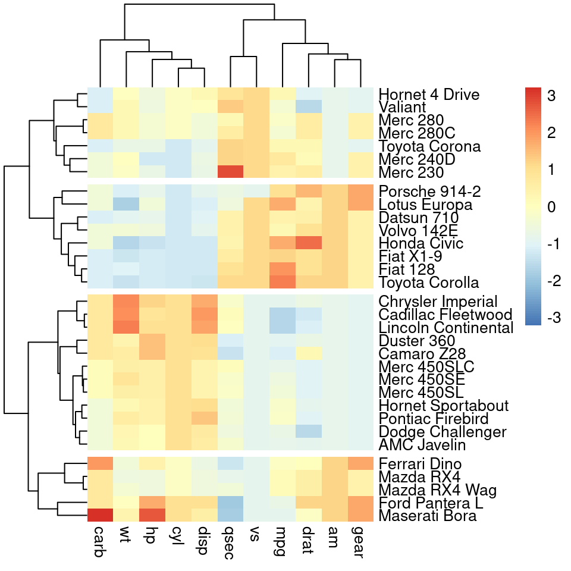
# 显示数字
pheatmap(mtcars,scale="column",border=NA,
display_numbers = T, # 热图上显示数值
fontsize_number = 6, #文字大小
number_color="darkred", #文字颜色
#number_format="%.1e", #数值显示类型, 如 科学计数法
cutree_cols = 3,cutree_rows =4, #对行列分块
# main="Gene1",
angle_col = 90, #列名旋转
clustering_distance_rows = "minkowski",
clustering_method="complete",
cluster_cols = T,treeheight_col = 20,
cluster_rows = T,treeheight_row = 20)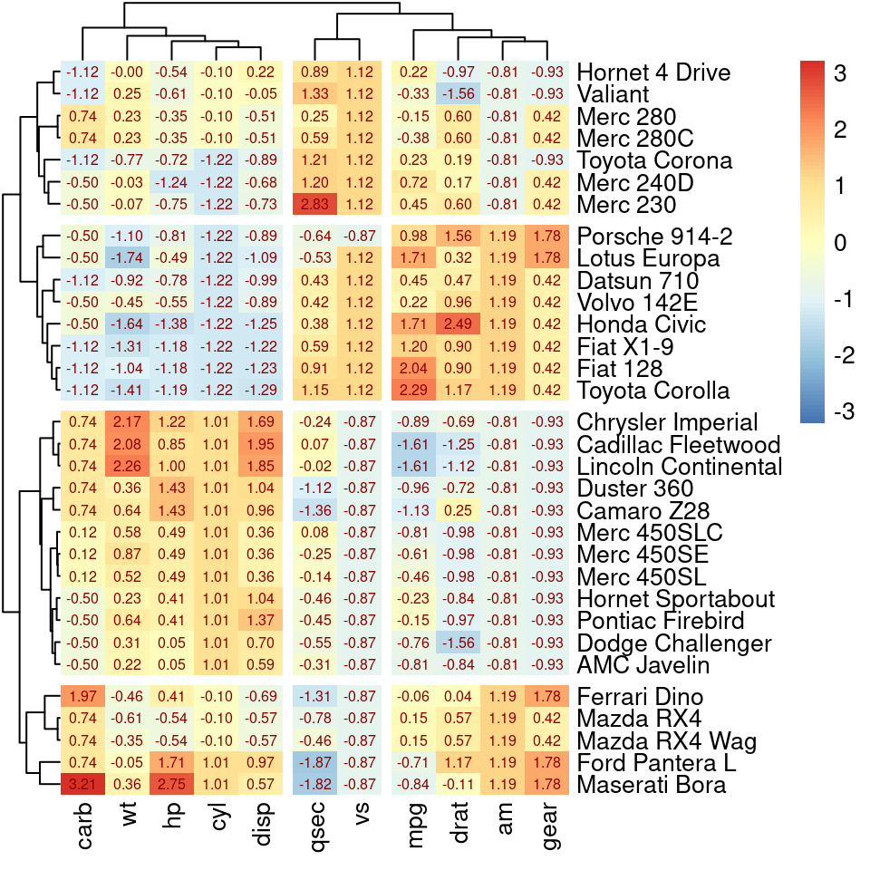
# 还可以标记正负号，小于0是-，大于1是++，0-1之间是+
pheatmap(mtcars,scale="column",border=NA,
display_numbers = matrix(ifelse(mtcars > 0,
ifelse(mtcars>1, "++", "+"),
"-"),
nrow(mtcars)), #输入为矩阵
main="")
# 添加行注释和列注释
#p <- pheatmap(data,
# annotation_col = annotation_col,
# annotation_row = annotation_row)
# 保存为pdf
#p <- pheatmap(data,
# filename = "基因家族热图.pdf", width = 10, height = 8)7.10 ComplexHeatmap 热图(功能多)
# Create test matrix
test = matrix(rnorm(200), 20, 10)
test[1:10, seq(1, 10, 2)] = test[1:10, seq(1, 10, 2)] + 3
test[11:20, seq(2, 10, 2)] = test[11:20, seq(2, 10, 2)] + 2
test[15:20, seq(2, 10, 2)] = test[15:20, seq(2, 10, 2)] + 4
colnames(test) = paste("Sample", 1:10, sep = "")
rownames(test) = paste("Gene", 1:20, sep = "")
test[1:3,1:4]## Sample1 Sample2 Sample3 Sample4
## Gene1 2.769402 -0.7855350 2.610273 -1.121647
## Gene2 4.525462 -0.5226219 1.621674 1.322747
## Gene3 2.230146 2.0127457 3.949946 1.7602117.10.1 pheatmap() 过渡函数
ComplexHeatmap::pheatmap() 过渡函数，仅仅是为了方便用户从 pheatmap 包无痛过渡。
library(ComplexHeatmap)
#v1 basic version
pheatmap( as.matrix(test), border_color = NA, #"#00112200",
scale = "row",
main="1")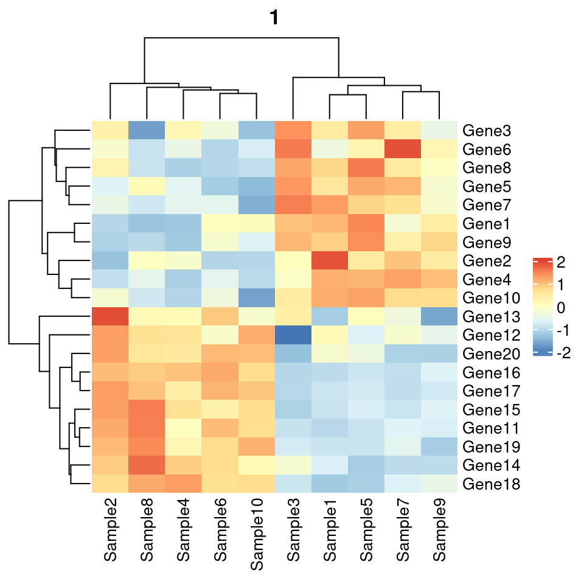
#v2, add more annotation
# Generate annotations for rows and columns
annotation_col = data.frame(
CellType = factor(rep(c("CT1", "CT2"), 5)),
Time = 1:5
)
rownames(annotation_col) = paste("Sample", 1:10, sep = "")
head(annotation_col)## CellType Time
## Sample1 CT1 1
## Sample2 CT2 2
## Sample3 CT1 3
## Sample4 CT2 4
## Sample5 CT1 5
## Sample6 CT2 1#
annotation_row = data.frame(
GeneClass = factor(rep(c("Path1", "Path2", "Path3"), c(10, 4, 6)))
)
rownames(annotation_row) = paste("Gene", 1:20, sep = "")
head(annotation_row)## GeneClass
## Gene1 Path1
## Gene2 Path1
## Gene3 Path1
## Gene4 Path1
## Gene5 Path1
## Gene6 Path1# Specify colors
ann_colors = list(
Time = c("white", "firebrick"),
CellType = c(CT1 = "#1B9E77", CT2 = "#D95F02"),
GeneClass = c(Path1 = "#7570B3", Path2 = "#E7298A", Path3 = "#66A61E")
)
# 除了图例，其他还是很一致的
pheatmap(test, annotation_col = annotation_col, annotation_row = annotation_row,
border_color = NA,
annotation_colors = ann_colors)
pheatmap::pheatmap(test, annotation_col = annotation_col, annotation_row = annotation_row,
border_color = NA,
annotation_colors = ann_colors)
7.10.2 Heatmap() 主力热图函数
正经功能还是推荐使用 ComplexHeatmap::Heatmap() 函数。
ComplexHeatmap::pheatmap()内部其实使用了Heatmap()函数，因此更多的参数都最终传递给了Heatmap()。 我们可以在pheatmap()中使用一些Heatmap()特有的参数，比如row_split和column_split来对行和列进行切分。
Heatmap(test) #可见，主函数默认是不带边框的，符合预期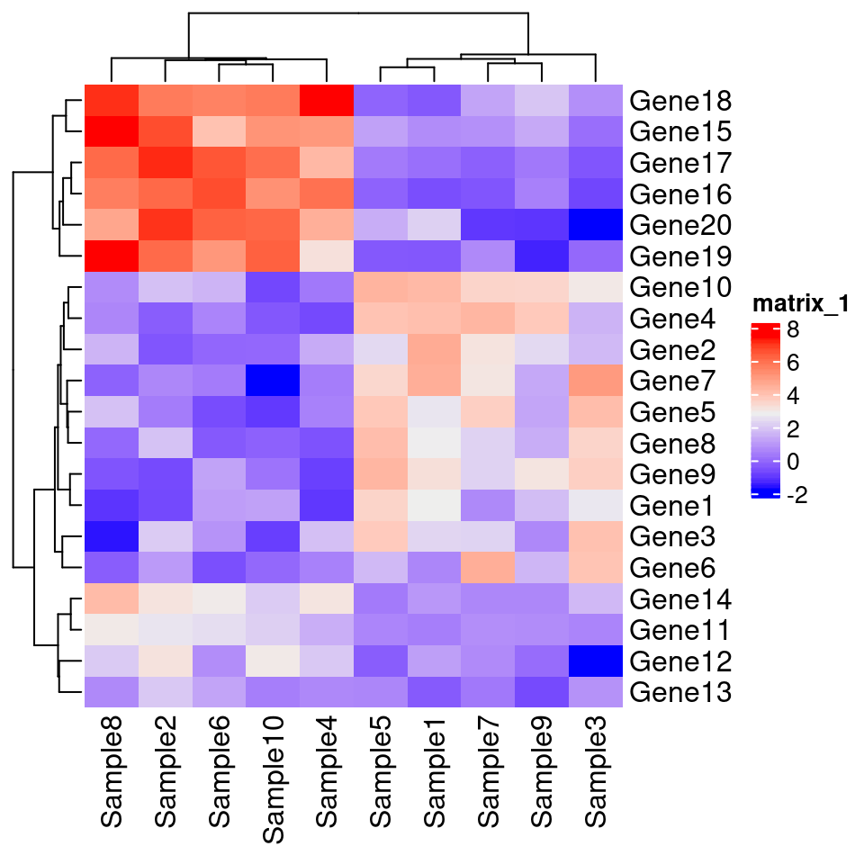
# km/row_km:对列进行聚类拆分
Heatmap(test, name = "row_km", km = 4)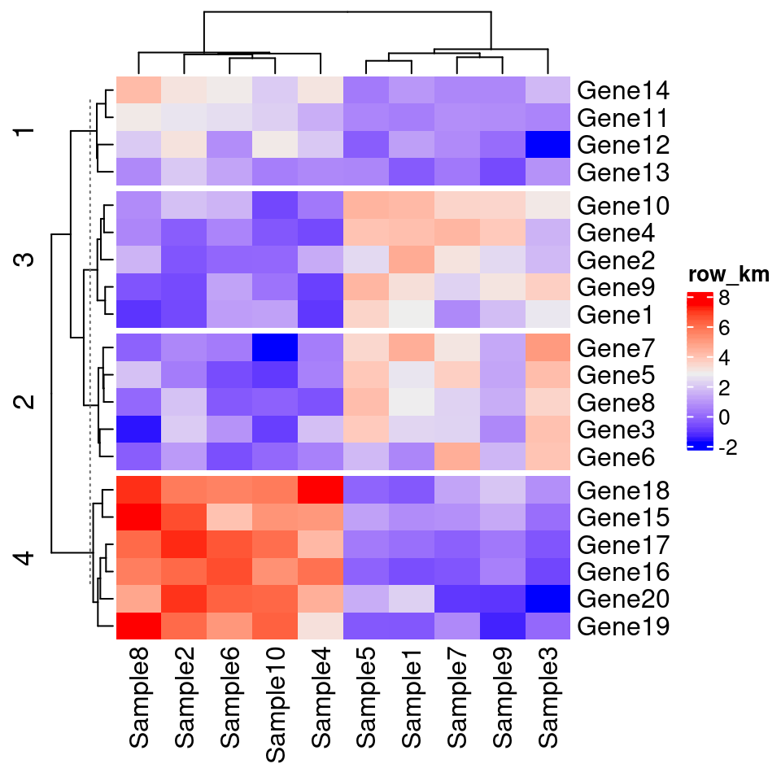
# 按照行进行分割聚类：column_km
Heatmap(test, name = "column_km", column_km = 4)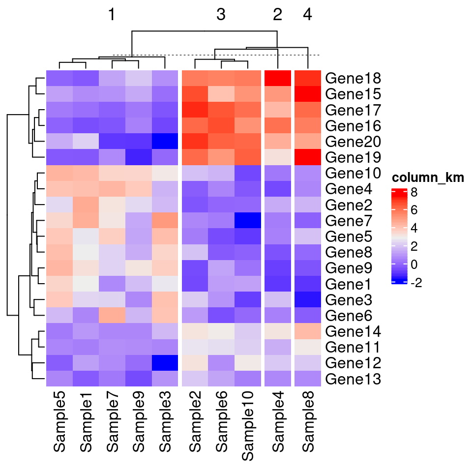
# 自定义颜色，这主要是通过circlize包中的colorRamp2()函数来实现的
library(circlize)
Heatmap(test,
col = colorRamp2(c(-5,0,5), c("green","white","red")),
cluster_rows = T,
cluster_columns = FALSE)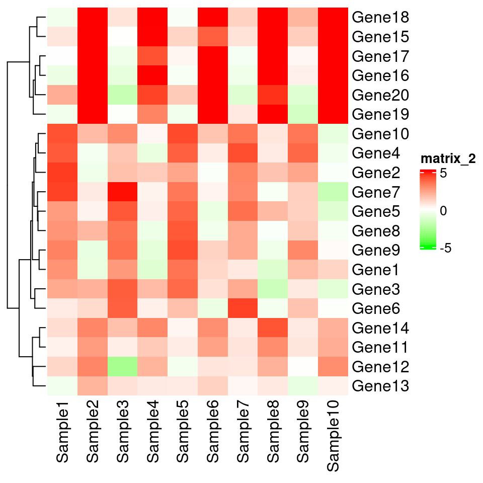
#拼接
#ComplexHeatmap::pheatmap()返回一个Heatmap对象，因此它可以与其他Heatmap/HeatmapAnnotation对象连接。
# 换句话说，你可以使用炫酷的+或者%v%对多个pheatmap水平连接或者垂直连接。
p1=Heatmap(test, name="mat1")
p2=rowAnnotation(foo=anno_barplot(1:nrow(test)))
p3=Heatmap(test, name="mat2",
col=c("navy", 'white', 'firebrick3'))
grid.newpage()
p1 + p2 + p3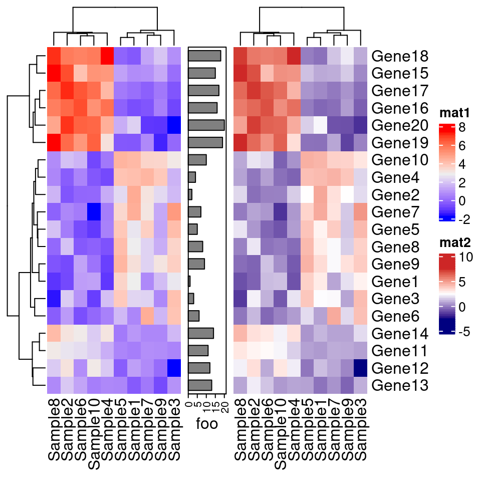
p1+p3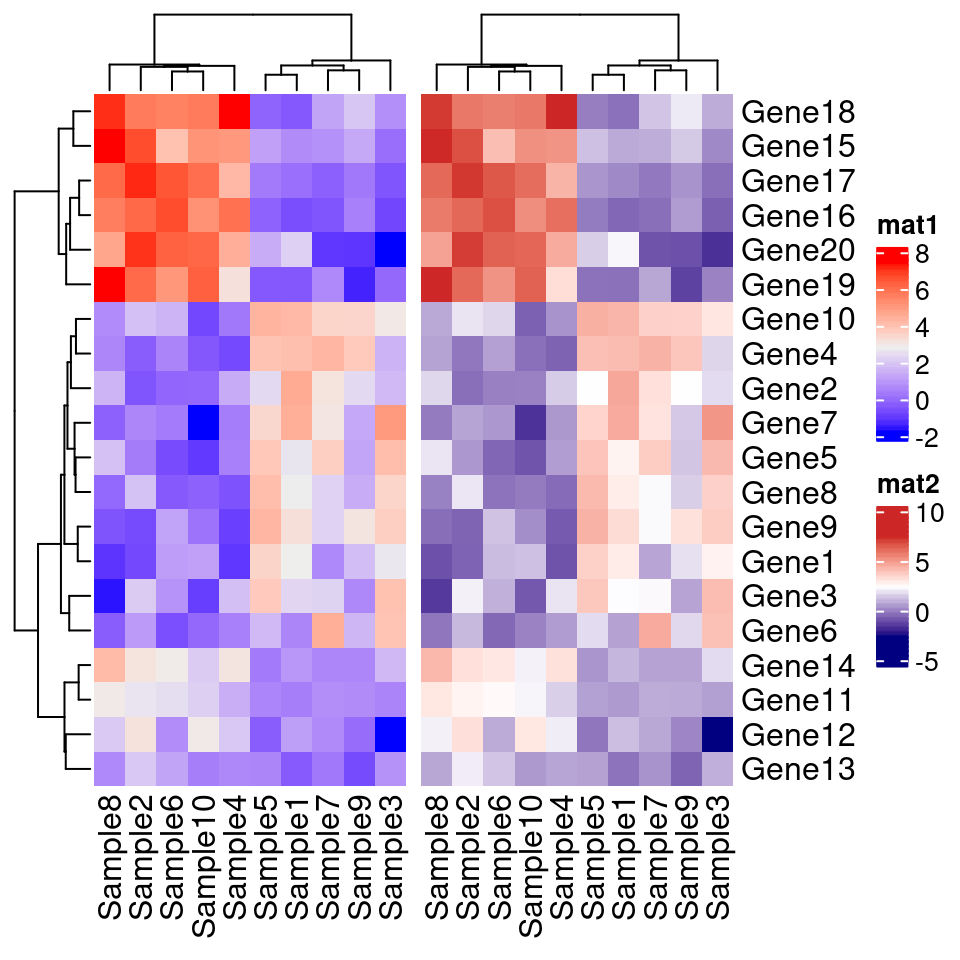
# 水平条注释
va1 = HeatmapAnnotation(
dist1 = anno_barplot( #等号左侧的名字能否不显示呢？
colSums(test),
bar_width = 1,
border = F, #不要边框
#height = unit(2, "cm"),
axis_param = list(at = c(0, 20, 40, 60),
labels = c("0", "20", "40", "60")),
gp = gpar(col="white", fill = 1:10)),
show_annotation_name = F)# 不显示这个bar的名字
va2 = HeatmapAnnotation(
foo = anno_boxplot(test, #默认显示这个bar的名字是等号左侧的名字
height = unit(2, "cm"),
border = F, #不要边框
gp = gpar(fill = 1:10)))
grid.newpage()
va1 %v% Heatmap(test, name="mat1") %v% va2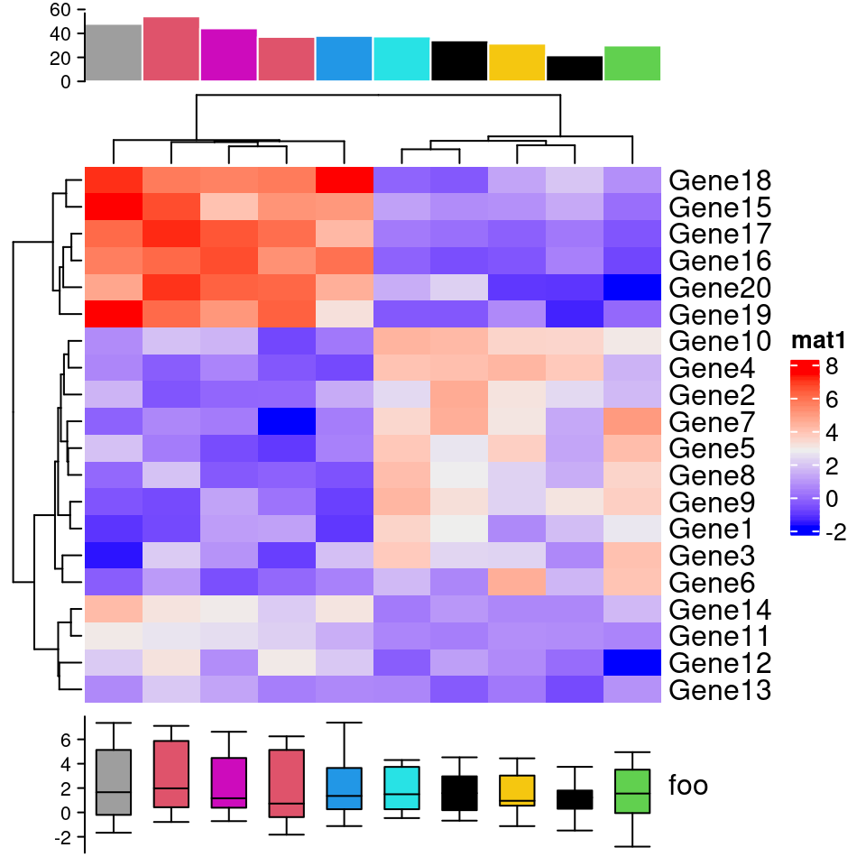
#Heatmap(test, name="mat1", height = unit(10, "cm"), top_annotation = va2)
# 控制顶部的高度
Heatmap(test, name = "base mean",
top_annotation = HeatmapAnnotation(summary = anno_boxplot(test,
height = unit(1, "cm"),
gp = gpar(fill = 1:10))),
height = unit(0.6, "npc"))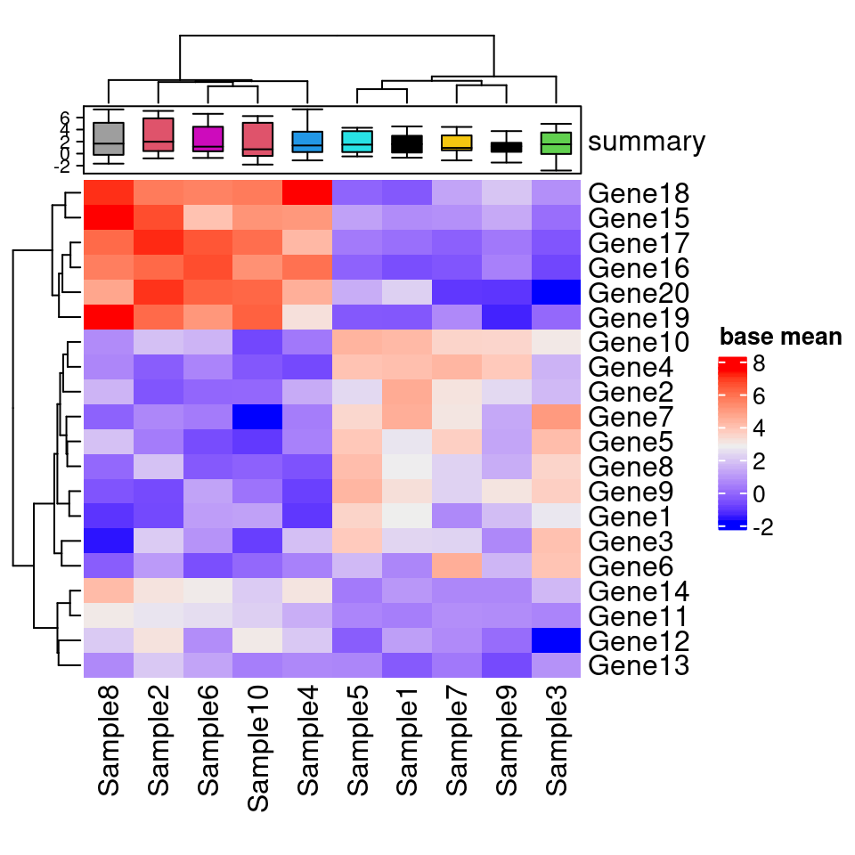
# 竖直条注释 rowAnnotation
ha = rowAnnotation(foo = anno_histogram(test, n_breaks = 20, gp = gpar(fill = 1:10)))
ha2 = rowAnnotation(foo2 = anno_boxplot(test))
ha3 = rowAnnotation(foo3 = anno_density(test))
ha3_ = rowAnnotation(foo4 = anno_density(test,
joyplot_scale = 2,#height of peaks
gp = gpar(fill = 1:20) ))
ha+ha2+ha3+ha3_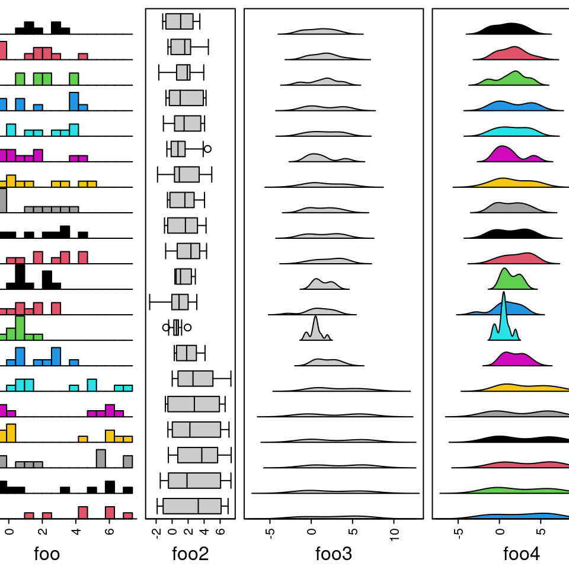
# 竖直条注释 2
ha4 = rowAnnotation(foo4 = anno_barplot( rowSums(test>4),
border = T,
gp = gpar(fill = 1:10, col="#00112200")))
ha5 = rowAnnotation(foo5 = anno_density(test, type = "violin",
gp = gpar(fill = 1:10)))
# when too many rows, space maybe small, then use heatmap
ha5_ = rowAnnotation(foo5_ = anno_density(test, type = "heatmap", #width = unit(2, "cm"),
border = T))
ha5_2 = rowAnnotation(foo5_2 = anno_density(test, type = "heatmap", width = unit(2, "cm"),
heatmap_colors = c("white", "orange"))) #a better color schema
ha4 + ha5+ha5_+ha5_2
7.10.3 为条形图加barplot(顶/右)
# 模仿 https://jokergoo.github.io/ComplexHeatmap-reference/book/more-examples.html 14.2
mat=as.matrix(mtcars)
# top
ha1 = HeatmapAnnotation(
dist1 = anno_barplot(
colSums(mat),
bar_width = 1,
gp = gpar(col = "white", fill = "#FFE200"),
border = FALSE,
axis_param = list(at = c(0, 2000, 4000, 6000, 8000),
labels = c("0", "2k", "4k", "6k", "10k")),
height = unit(2, "cm")
), show_annotation_name = FALSE)
# right
ha2 = rowAnnotation(
dist2 = anno_barplot(
rowSums(mat),
bar_width = 1,
gp = gpar(col = "white", fill = "#FFE200"),
border = FALSE,
axis_param = list(at = c(0, 300, 600),
labels = c("0", "0.3", "0.6")),
width = unit(1.5, "cm")
), show_annotation_name = FALSE)
#draw(ha2)
# x axis text 底部坐标文字
x_text = colnames(mat)
#x_text[year_text %% 10 != 0] = ""
ha_column = HeatmapAnnotation(
year = anno_text(x_text, rot = 60, location = unit(1, "npc"), just = c('right', "top") )
)
# 热图
col_fun = colorRamp2(c(0, 20, 200, 472), c("white", "cornflowerblue", "yellow", "red"))
ht_list = Heatmap(
mat, name = "XX01", #图例
col = col_fun,
cluster_columns = FALSE, show_row_dend = FALSE,
rect_gp = gpar(col= "white"),
show_column_names = FALSE,
row_names_side = "left", #左侧显示文字
row_names_gp = gpar(fontsize = 8),
column_title = 'Car dataset\nProduced at 2022',
top_annotation = ha1, #top bar
bottom_annotation = ha_column, #底部文字
heatmap_legend_param = list(at = c(0, 150, 300, 450),
labels = c("0", "150", "300", "450"))) + ha2 #右侧bar
draw(ht_list, ht_gap = unit(3, "mm"))
# 添加修饰竖线，虚线
decorate_heatmap_body("XX01", {
i = which(colnames(mat) == "wt")
x = i/ncol(mat)
grid.lines(c(x, x), c(0, 1), gp = gpar(lwd = 2, lty = 2))
grid.text("yy point", x, unit(1, "npc") + unit(5, "mm"))
})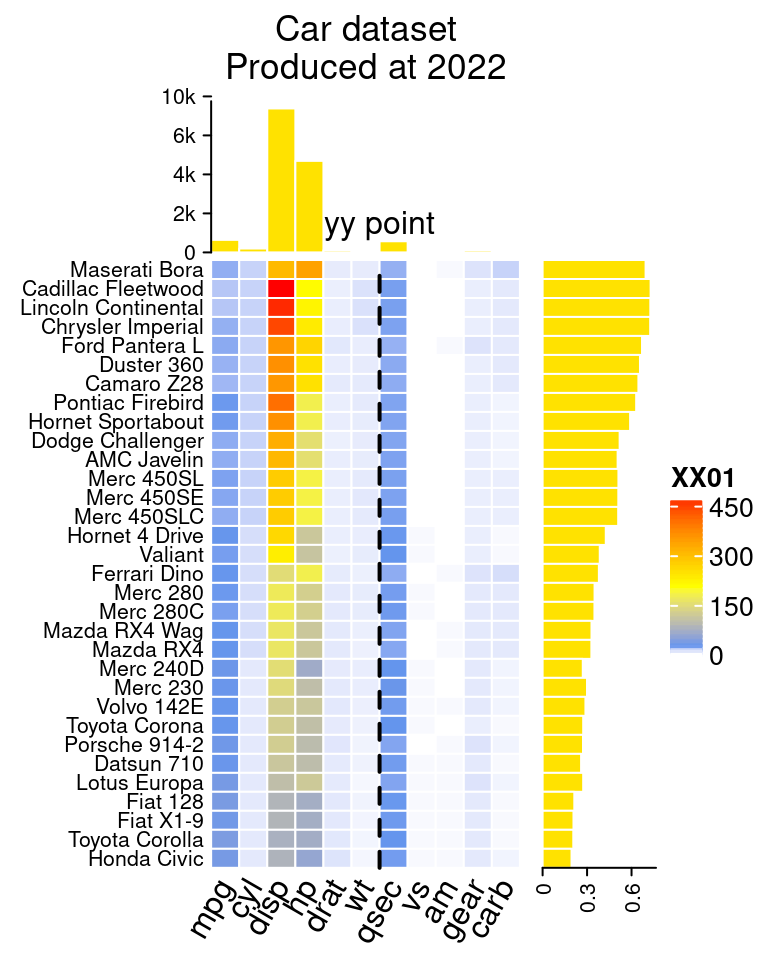
7.10.4 仅注释特定几个基因
自定义行注释，仅注释特定几个基因 rowAnnotation
- https://blog.csdn.net/weixin_39942995/article/details/111985755
- https://www.jianshu.com/p/eb8548cf73c4
gene=c("Gene18", "Gene19", "Gene7","Gene3", "Gene9", "Gene15")
gene_pos=which(rownames(test) %in% gene) #3 7 9 15 18 19
#右侧要注释的基因
row_anno=rowAnnotation(gene=anno_mark(at=gene_pos, #位置
labels=gene, #文字
labels_gp=gpar(fontsize=8, col="red"))) #样式
Heatmap( test,
heatmap_legend_param = list(title=""), #修改图例标题，该语句或者 name=语句
show_row_names = F, #不显示右侧注释
right_annotation = row_anno) #只显示感兴趣基因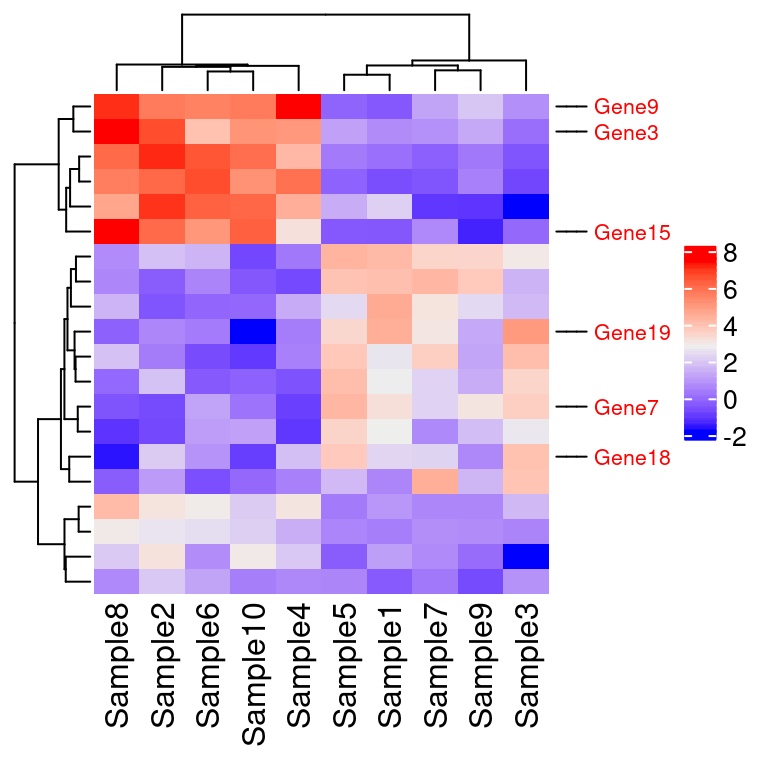
7.11 dendextend 给聚类图上色
# BiocManager::install("dendextend")
library(dendextend)
df1=mtcars
row_dend = hclust(dist(df1)) # row clustering
col_dend = hclust(dist(t(df1))) # column clustering
# plot(row_dend )
#plot( color_branches(row_dend, k = 4), leaflab = "none")
plot( color_branches(row_dend, k = 4), #染色
leaflab = "none", #不显示叶子标签
lwd=10, #怎么加粗？
cex=10, #怎么加粗？
horiz = T ) #水平放置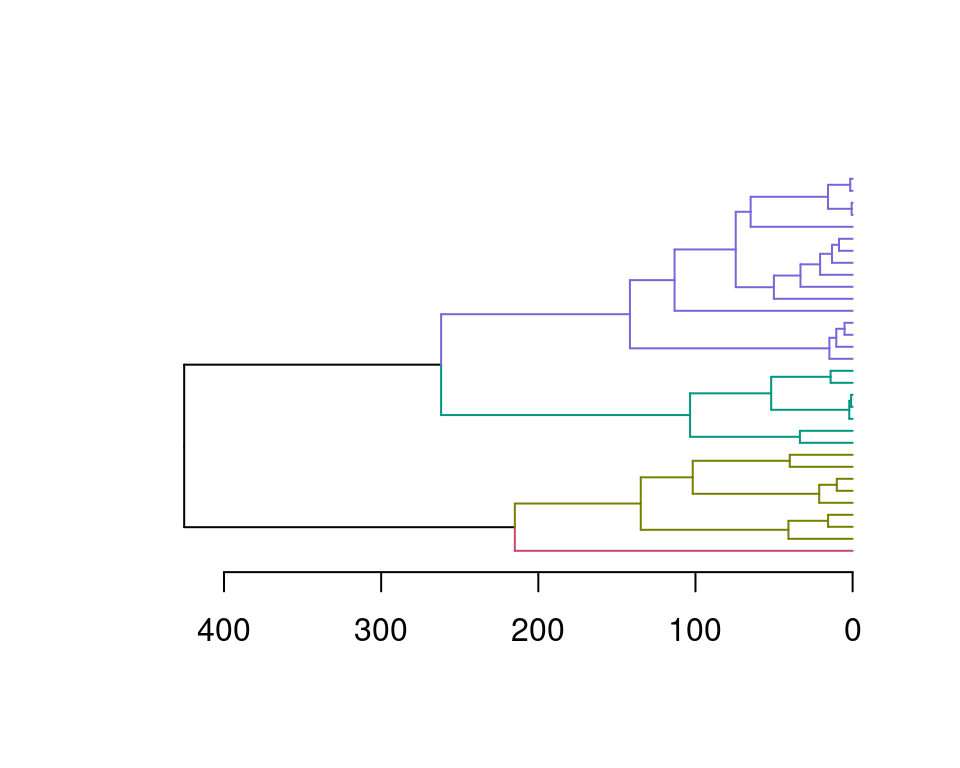
library(ComplexHeatmap)
library(grid)
Heatmap(scale(df1), name = "mtcars",
row_names_gp = gpar(fontsize = 6.5),
cluster_rows = color_branches(row_dend, k = 4),
cluster_columns = color_branches(col_dend, k = 2))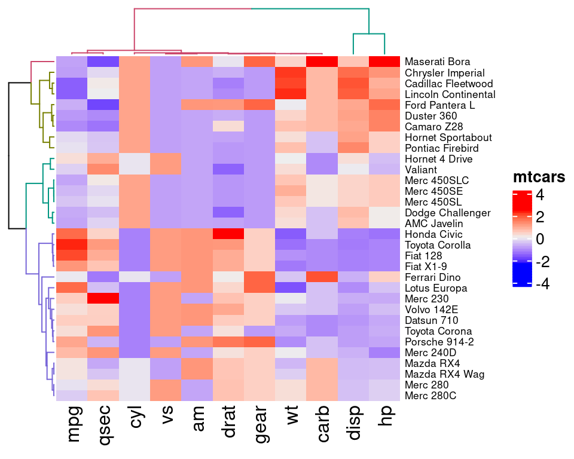
7.12 标文字 ggrepel 避免重叠
https://ggrepel.slowkow.com/articles/examples.html
library(ggplot2)
library(ggrepel)
ggplot(mtcars,
aes(wt, mpg, label = rownames(mtcars), colour = factor(cyl))) +
geom_point()+
geom_label_repel(aes(fill=factor(cyl)), #填充背景
colour="white", #文字颜色
segment.colour="black")+ #连线颜色
theme_bw()## Warning: ggrepel: 19 unlabeled data points (too many overlaps). Consider
## increasing max.overlaps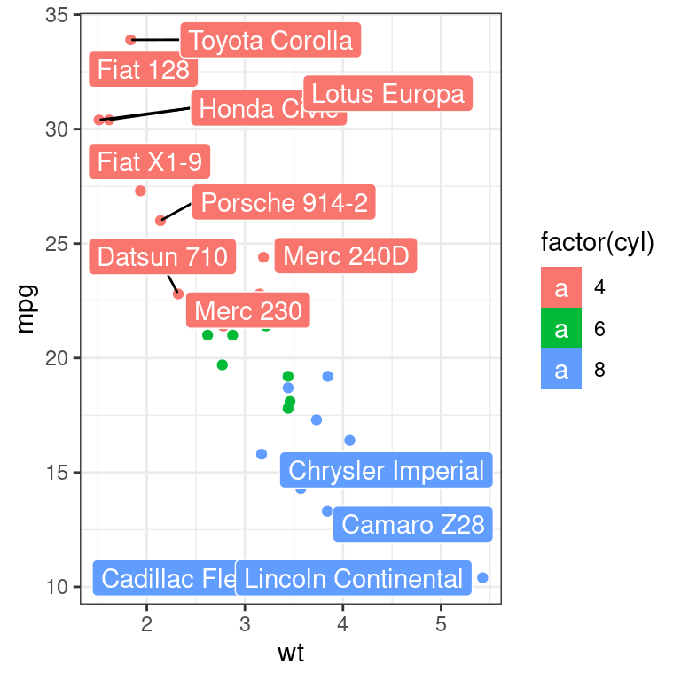